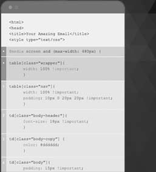

|
| HTML Email Template |
| by The Bloc Devs |
| Introduction to HTML emails |
| HTML emails are still one of the most effective ways of reaching and engaging your audience. However, the technology behind rendering emails is still fairly restrictive for both designers and developers. Understanding these restrictions will not only help the agency produce quality emails but also decrease time spent designing, developing and maintaining them. |
| Emails can be beautiful and effective |
| Even though we're forced to use antiquated technologies and coding methodologies to design and build HTML emails, it IS possible to develop clean, beautiful and modern emails. Unfortunately, to do so, we're forced to use the absolute lowest common denominators (in terms of markup) to ensure that our designs render properly across all email clients. This will limit our development teams by forcing our code to be very verbose and limiting our creative teams to rely more on content and less on design and structure. |
| Creating responsive content |
| Unlike responsive websites, responsive emails rely more on consistent content than imagery. It is important to focus on one content manuscript and one image library for both mobile and desktop breakpoints. Conditionally hiding and showing content between the breakpoints has proven to be problematic and inconsistent. While it is possible to show and hide content when a user views the email, the conditions break when a user forwards or replies to an email. To avoid these situations, it is recommened that we use one content manuscript and one image library. |
| Keep in mind that this also applies to legal codes. An email should only have one legal code regardless of the breakpoints. |
| Some pointers |
| Here are some pointers on what to avoid while designing HTML emails: |
|
Stay within 600 pixels. Even on desktops, most email clients display the contents of an email within a narrow panel. The minimum width for the majority of these email clients is 600 pixels wide. Keep this in mind when creating your design canvas. |
|
Avoid placing live text above imagery, patterns, textures... basically, only use solid colors behind live text. Older email clients (specifically Outlook) don’t allow for background images. Some email clients allow background images. Unfortunately, there are a few email clients that still don't allow background images. To preserve the consistency across all email clients, we are forced to target the email clients with the lowest rendering abilities. |
|
Avoid borders and ESPECIALLY avoid dropshadows. Borders and dropshadows often times require an excessive amount of images, markup and inline CSS which may or may not render consistently across all email clients. |
|
Avoid non-email-safe fonts. If non-email-safe fonts are used, then that block of content will have to be saved as an image. Images add considerable more weight to emails. It also poses an issue for email clients that don't download images by default. Typically, users have to approve the download of images, or adjust their email client settings in order to view images. This will result in emails being viewed without images loading. Use non-email-safe fonts sparingly, if possible. (The core email-safe fonts are: Arial, Courier, Georgia, Tahoma, Times New Roman, Trebuchet, Verdana). |
|
|
| Multiple columns |
| There may be instances where multiple columns are required to lay out content. In those cases, each column would be encapsulated within their own tables. |
|
|
| Responsive |
| At the mobile breakpoint, columns would be aligned left to each other at the desktop breakpoint and their alignment will be removed at the mobile breakpoint. |
|
|
|
| Building responsive emails follow a very similar design and coding approach to building websites. The idea is simple: use one manuscript and display the content differently for each breakpoint. And, as always, MOBILE FIRST! |
| The mobile breakpoint will be 599 -- one pixel less than the width of the email at the desktop breakpoint. At 599 pixels, the layout will snap to the mobile breakpoint. At the mobile breakpoint, it is important that we build all elements to be fluid so that they take up 100% of the viewport. |
|
 |
|
| Standard column widths |
| It is common to lay out your content using multiple columns. However, it is recommended that you avoid using more than two columns. The reason for this is because, at most, three columns will have a minimum of 200 pixels each (assuming the email is built at 600px wide). This does not including gutters and padding, which will reduce your canvas for your copy even further. At 200 pixels, content begins to become crowded and difficult to read.1 |
| There are two standard layouts for emails: single column and two columns. This panel is an example of a two column layout, with content on the left side of the panel and informational elements on the right. |
| Use the Golden Ratio |
| As mentioned above, the standard width for emails is 600 pixels. We recommend using the “Golden Ratio” to determine the widths of both columns. We're setting this value to set our baseline rules for emails. These numbers can be adjusted on a per-brand and a per-product basis. Our recommendation to start with the Golden Ratio and then adjust those ratios if needed. |
| Using the Golden Ratio of 1.618, we’ll divide the two columns as such: |
| Column 1 |
61.8% |
370px |
| Column 2 |
38.2% |
230px |
|
| The responsive golden ratio is a full 100% |
| Because the canvas for mobile phones is very narrow, it’s important that we give ourselves enough real estate to display content at legible sizes. The standard layout for mobile devices calls for 100% wide single columns. All columns will stack on top of each other, and all elements within those columns will also stack on top of each other. Keep in mind that emails with two columns can result in the size of the email doubling in height at the mobile breakpoint because both columns will stack on top of each other. |
| 78% |
| of smartphone users read their email on their phone. It is the most popular activity on smartphones. |
| What are your thoughts on HTML emails? |
|
|
| Did you know that you could begin a survey experience from within an email? The trick is to treat the actual selection of an option as a click, which will take users to a landing page along with a URL parameter which will declare the user's selection. For example: http://site.com?choice=friggin-awesome. On the landing page, the server will parse out 'friggin-awesome' as their choice. With this, we can run visual conditions, store the data, and much more. |
|
|
|
References: 1. National Institutes of Health. Diabetic retinopathy: causes and risk factors. NIHSeniorHealth website. http://nihseniorhealth.gov/diabeticretinopathy/causesandriskfactors/01.html. Accessed February 10, 2015. 2. National Eye Institute, National Institutes of Health, US Dept of Health and Human Services. Facts about diabetic eye disease. https://www.nei.nih.gov/health/diabetic/retinopathy. Accessed February 10, 2015. 3. Danis RP. Diabetic macular edema. In: Albert DM, Miller JW, Azar DT, Blodi BA, eds. Albert & Jakobiec’s Principles and Practice of Ophthalmology. 3rd ed. Philadelphia, PA: WB Saunders; 2008:1793-1806.
|
| IMPORTANT SAFETY INFORMATION AND INDICATION |
| Some people have had changes in behavior, hostility, agitation, depressed mood, suicidal thoughts or actions while using CEMENTBLOC to help them quit smoking. Some people had these symptoms when they began taking CEMENTBLOC, and others developed them after several weeks of treatment or after stopping CEMENTBLOC. If you, your family or caregiver notice agitation, hostility, depression or changes in behavior, thinking, or mood that are not typical for you, or you develop suicidal thoughts or actions, anxiety, panic, aggression, anger, mania, abnormal sensations, hallucinations, paranoia or confusion, stop taking CEMENTBLOC and call your doctor right away. Also tell your doctor about any history of depression or other mental health problems before taking CEMENTBLOC, as these symptoms may worsen while taking CEMENTBLOC. |
|
| Some people had seizures during treatment with CEMENTBLOC. Most cases happened during the first month of treatment. Tell your doctor if you have a history of seizures. If you have a seizure during treatment with CEMENTBLOC, stop taking CEMENTBLOC and contact your healthcare provider right away. |
| Decrease the amount of alcohol you drink while taking CEMENTBLOC until you know if CEMENTBLOC affects your ability to tolerate alcohol. Some people experienced increased drunkenness, unusual or sometimes aggressive behavior, or memory loss of events while consuming alcohol during treatment with CEMENTBLOC. |
| Do not take CEMENTBLOC if you have had a serious allergic or skin reaction to CEMENTBLOC. Some people can have serious skin reactions while taking CEMENTBLOC, some of which can become life-threatening. These can include rash, swelling, redness, and peeling of the skin. Some people can have allergic reactions to CEMENTBLOC, some of which can be life-threatening and include: swelling of the face, mouth, and throat that can cause trouble breathing. If you have these symptoms or have a rash with peeling skin or blisters in your mouth, stop taking CEMENTBLOC and get medical attention right away. |
| Before starting CEMENTBLOC, tell your doctor if you have a history of heart or blood vessel problems. If you have new or worse heart or blood vessel symptoms during treatment, tell your doctor. Get emergency medical help right away if you have any symptoms of a heart attack or stroke. |
| The most common side effects of CEMENTBLOC include nausea (30%), sleep problems, constipation, gas and/or vomiting. If you have side effects that bother you or don’t go away, tell your doctor. You may have trouble sleeping, vivid, unusual or strange dreams while taking CEMENTBLOC. Use caution driving or operating machinery until you know how CEMENTBLOC may affect you. |
| CEMENTBLOC should not be taken with other quit-smoking products. You may need a lower dose of CEMENTBLOC if you have kidney problems or get dialysis. |
| Before starting CEMENTBLOC, tell your doctor if you are pregnant, plan to become pregnant, or if you take insulin, asthma medicines or blood thinners. Medicines like these may work differently when you quit smoking. |
|